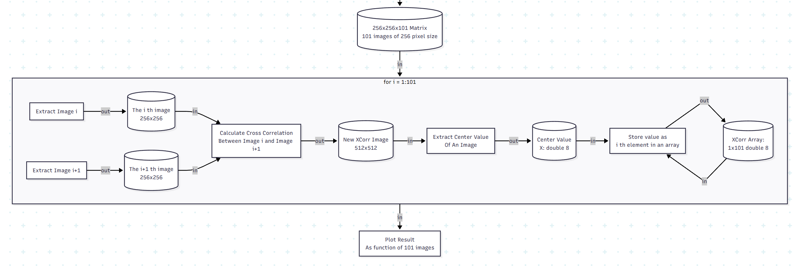
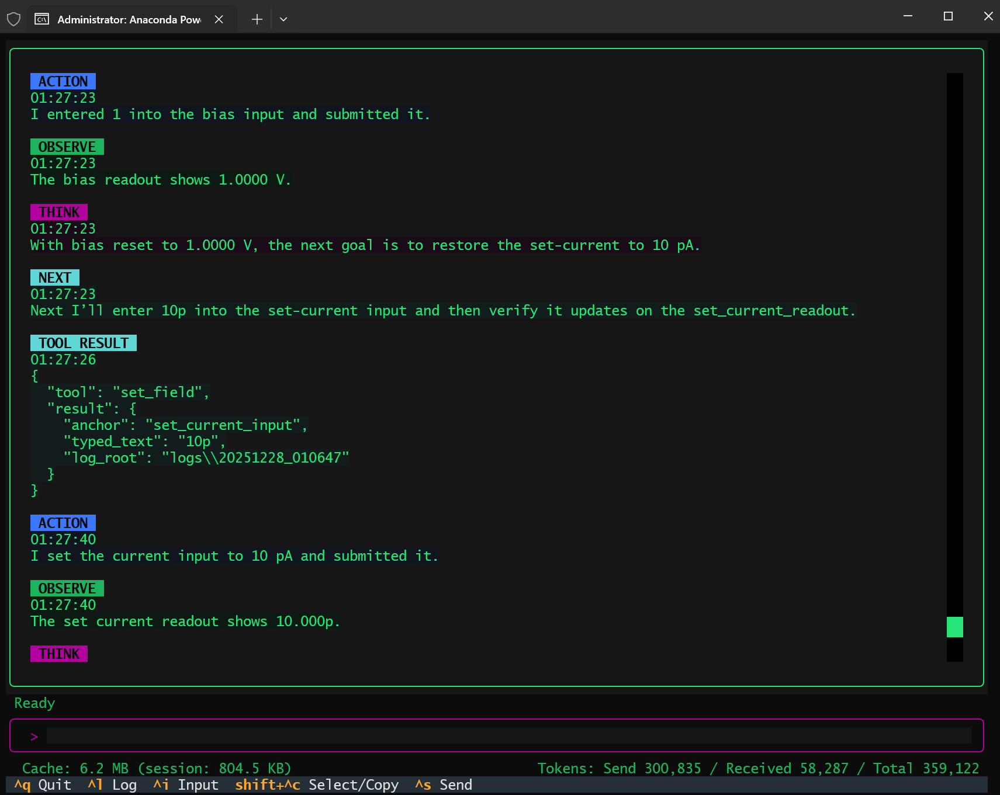
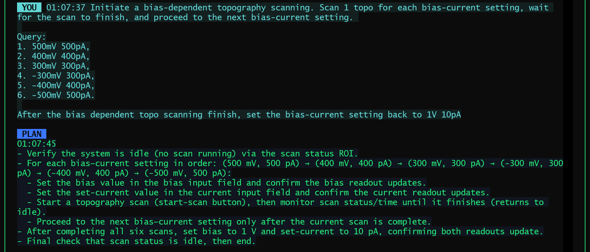
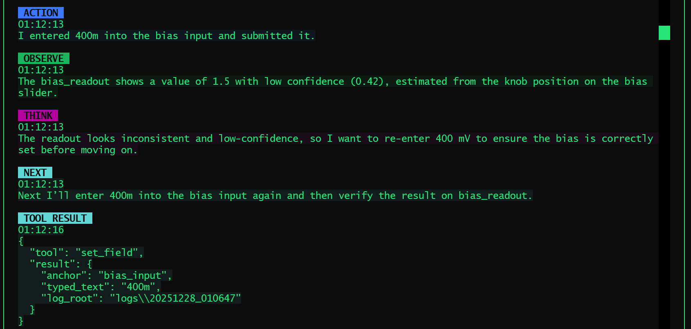
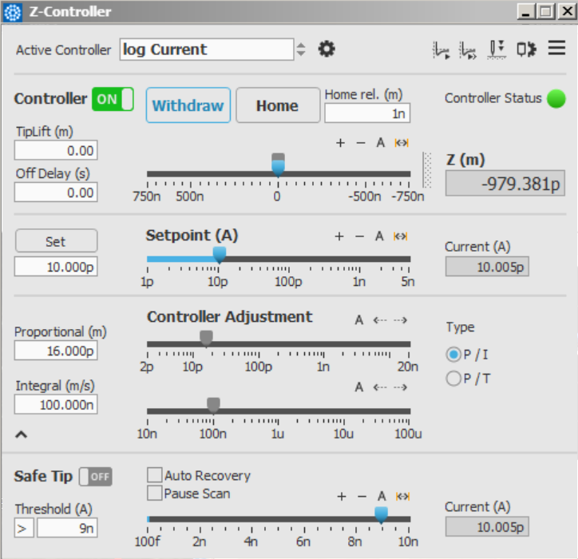

Exploring the Automation Solution in Experimental Science in 2025 — This Is What I Learned
Posted on Dec 29, 2025.
Over the last few days of 2025, I finally built my first agent that I am willing to call a real agent. It controls an SPM system in a real experimental environment, runs without human supervision, observes the world it acts on, and makes decisions based on what actually happens rather than what it assumes should have happened. Demo Here. This blog is not a victory lap. It is a retrospective on how my understanding of automation in experimental science evolved—from early, heavily structured LLM workflows, to a genuine agent operating in an open physical environment—and what this journey taught me about agents, structure, context, and the future of AI-driven experimental automation.
What follows is not a tutorial. It is an attempt to articulate a mental model that survived contact with reality.
From DAA to SPM Agent: Why My First “Agent” Wasn’t Really an Agent
Earlier this year, I was building what I called a Data Analysis Agent (DAA). In hindsight, the name was generous. It was, in practice, a structured LLM workflow executor: a TaskGraph, a deterministic execution engine, carefully staged tool calls, and aggressive guardrails against hallucination. Demo Here. // Repo Here. Although the project started April 2025, the idea was conceived way back to 2022, the late GPT-3 era. At the time—late GPT-3 era—this was not overengineering. Models hallucinated APIs, fabricated classes, and produced code that looked plausible but could not run. Even when it came to the GPT-4 era, we are still shadowed by these nightmares. Structure was not a design preference; it was a survival mechanism.
Looking back now, some of those designs feel almost comical, like an anachronism. But that feeling is misleading. As I looked back to the time I worked on DAA, a funny scene came up to my mind: a stone-aged human asking a modern human, “If you don’t go out to hunt today, how do you avoid starving tomorrow?”. DAA existed because, at that time, it was the only rational way to get anything reliable out of an LLM, an early human worrying about hunting is not stupid—hunting was the only way to stay alive. The fact that GPT-4 and later models made many of those constraints unnecessary does not retroactively invalidate the logic behind them.
What DAA lacked was not sophistication, but exposure. It lived in a closed world: files, functions, schemas, deterministic outputs. It never had to confront a system that could refuse, lag, desynchronize, or silently fail. And because of that, it never forced me to answer the hardest question: what does it mean for an agent to know whether it is actually doing the right thing?

A complicated, static workflow has to be designed pre executing the data analysis.Why the SPM Agent Changed Everything
The SPM agent answered that question by force.
Unlike DAA, this agent operates in an open, real environment. The UI can change. The instrument can stall. A scan may start, but not actually start. A parameter may be set, but not applied. Nothing is guaranteed unless it is observed. This single shift changed everything about how I thought about agents.
The most important realization was simple but uncomfortable:
Agent reliability does not come from structure itself, but from how much the orchestration respects real-world state.
Most of the classic “agents are brittle” arguments assume an agent that acts optimistically—one that executes a plan and assumes success unless told otherwise. My SPM agent survived because it did the opposite, it deeply roots in the ReAct philosophy. Every action was followed by observation. Every transition was gated on actual UI state. When something was unclear, the agent waited. When state contradicted intent, the agent stopped. The system did not become reliable because it had fewer steps, but because it refused to advance without evidence.

The screenshot of SPM Agent running a bias dependent topography scanning query.
The screenshot of SPM Agent plan for the bias dependent topography scanning query.Ironically, the agent did run into all the problems people warn about: drifting behavior, misinterpreted state, partial failure. What fixed these issues was not abandoning agents in favor of workflows, but correcting the orchestration itself. The failure mode was not “LLMs are unreliable,” but “the control loop was poorly specified.”

The bias setting wasn't successful due to unknown reason, but the agent corrected itself from the drifting, which is unexpected by the plan.Once the orchestration was rebuilt with explicit observe–decide–act discipline, the system stabilized. And it did so in a way that felt, for lack of a better word, rational.
Structure vs Emergence: A False Dichotomy
It would be tempting to tell a clean story here: early models needed structure, modern models rely on emergence, therefore structure is obsolete. This story is wrong.
Anthropic’s recent work—especially the Skills paradigm came out Oct 2025, and emphasized at AWS re:Invent 2025—makes this very clear. Skills were introduced in an era of extremely capable models (GPT-5.2, Gemini 3 Pro, Opus 4.5) with massive context windows, yet they were widely praised as elegant and forward-looking. No one seriously argued that they were unnecessary because “the model is smart enough now.”
Why? Because Skills do not exist to compensate for weak models. They exist to solve a problem that does not go away with scale: attention is finite, context is expensive, and not everything should be visible at all times.
This also resonated with an idea I had been circling around for some time, when I was designing DAA, even if I never gave it a formal name. The question was never how to constrain intelligence, but how to route it—how to decide which tools, knowledge, and affordances should be relevant in this moment. Stronger models do not make this question disappear; they amplify it. When everything becomes possible, the harder problem is deciding what should be possible at all.
In that sense, some of the most important ideas in DAA were not outdated at all. They simply belonged to a different layer of the system.
Context Engineering: The Real Agent Problem
One of the most valuable lessons from Anthropic’s report is the reframing of “prompt engineering” into context engineering. This resonates deeply with my experience building the SPM agent.
The hardest part was never writing a good prompt. It was deciding:
- What state should be made explicit?
- What history should be retained, summarized, or discarded?
- What information must be fresh, and what can be cached?
- When should the agent stop and compress its own experience?
In the SPM agent, the most meaningful progress came from being intentional about how context was presented to the model. Instead of exposing the agent to all available control information and expecting it to reason its way to the right focus, I designed the system so that each action explicitly defined where is possible to be subjected by that action. By linking actions to their most relevant consequences, the agent was guided to attend only to information that mattered for validating its own behavior. This form of action-linked observation is a concrete example of context engineering: not adding more information, but shaping which information becomes relevant at each step.

One of the control panels from the SPM control software.This insight scales directly to more ambitious systems. Long-horizon agents require compaction. Case-based systems require retrieval that can fail and recover. Real-world agents require state that is trustworthy, not just verbose. None of this is solved by larger context windows or a super-smart LLM alone.
CoALA, Memento, Case-Based Reasoning
My long-term interest has never been in making agents that sound smarter. It has been in making agents that learn from experience in a way that respects reality.
This is why CoALA: cognitive architectures for LLM agent caught my eyes, and why Memento and case-based reasoning (CBR) feel more promising than brute-force fine-tuning. Fine-tuning optimizes distributional behavior. CBR preserves situational memory. One compresses; the other remembers why something worked or failed.
In experimental science, edge cases are not noise—they are the data. A system that forgets failure modes is not intelligent; it is dangerous. A case-based approach allows an agent to say, in effect: I have been in something like this situation before, and here is what happened. That is far closer to how human experimentalists actually operate.
This is also where the boundary between “knowledge” and “skills” becomes blurry. Take bias-dependent topography scanning as an example. At the knowledge level, this might be described as a simple experimental plan: perform a topography scan at each bias value, move through a predefined bias list, and relate the choice of bias points to the material’s electronic properties. But in practice, making this work reliably also requires skills that are rarely written down—such as deliberately initiating a short scan to get the piezo moving before restarting the actual measurement, in order to reduce uncalibrated drift between scans. This distinction matters because such skills are not abstract rules but accumulated experience. What ultimately defines intelligence here is not whether knowledge and skills are cleanly separated, but whether past experience can be retrieved, placed into context, and executed at the right moment.
Agents, SDKs, and the Question of Survival
At this point, it is hard to avoid a broader question. As agent frameworks mature, major companies are rapidly lowering the technical barrier to building agents. With ready-made SDKs: standardized development kits, what once required months of careful engineering can now be assembled in days. On the surface, this feels empowering. At the same time, it subtly changes what it means to “build an agent” in the first place.
What becomes clear, especially after working on an agent that interacts with real experimental systems, is that the hardest part was never wiring tools together. The real difficulty lies in making the system behave responsibly in an open, physical environment—knowing when to proceed, when to stop, and how to recover when reality does not cooperate. SDKs can make it easier to construct agent-like software, but they do not make it easier to bear the consequences of incorrect decisions, nor do they accumulate the hard-earned experience that comes from repeated interaction with real experiments.
Framed this way, the question gradually shifts. It is no longer about whether one can build an agent faster than everyone else, but about what kind of automation capability is actually being delivered, and what degree of responsibility comes with it. Once I started thinking in these terms, the competitive landscape looked very different. Tooling became shared infrastructure, while experience, judgment, and accountability emerged as the real differentiators.
Where My Agent Goes Next
The SPM agent is not the end goal. It is a proof of contact with reality. What comes next is less about making the agent “smarter” (in the superficial layer), and more about refining how it interacts with the world and how context is constructed around that interaction. The real challenge is to scale this system without drowning the model in information—by carefully controlling what the agent attends to, when it should act, and when it should wait.
Concretely, this points toward stronger context engineering and structured attention coordination. As the agent’s capabilities expand, it becomes increasingly important to decide which parts of the system state, historical context, and operational knowledge should be exposed at each step, and which should remain latent. Rather than hard-coding ever larger workflows, the focus shifts to building a coordination layer that routes attention, selects relevant capabilities, and enforces disciplined interaction with real experimental systems.
That might sound too much information, but in fact it is just one rule: by being forced to respect the world these agents act in.
Many posts today are about unifying agent frameworks and standardizing interfaces. That work is necessary. But what I am more interested in is something orthogonal: how agents acquire judgment through interaction with reality.
That question does not go away with better models. If anything, it becomes more urgent.
And for now, that is the most valuable thing "exploring the automation solution in experimental science in 2025" taught me.